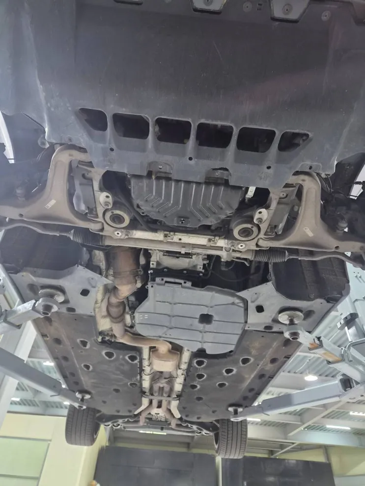
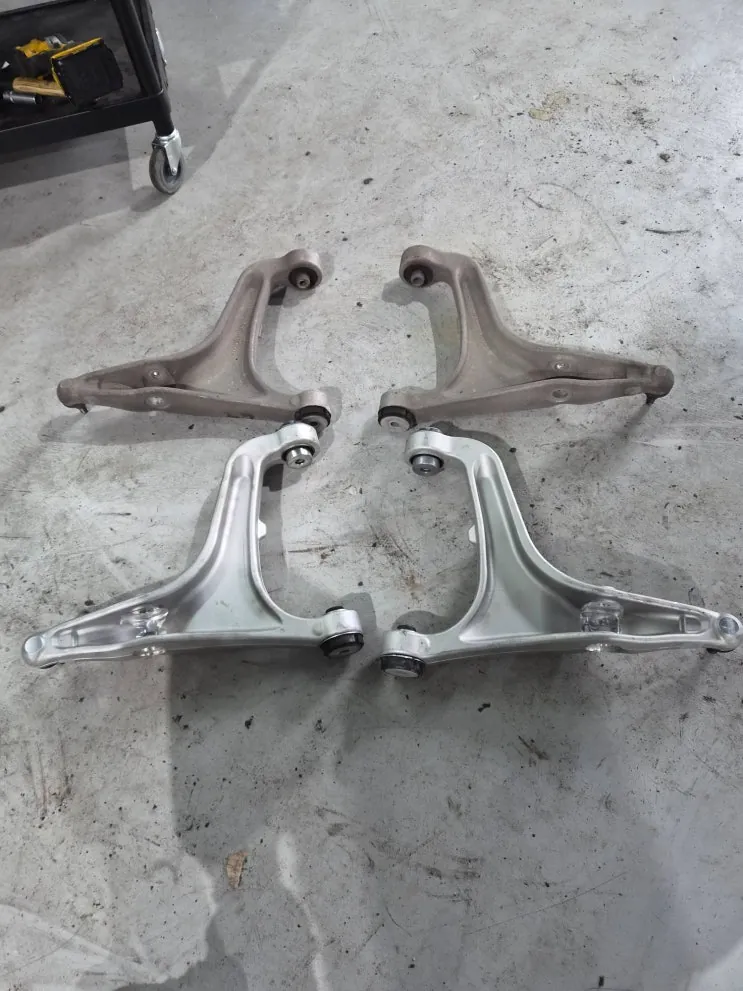
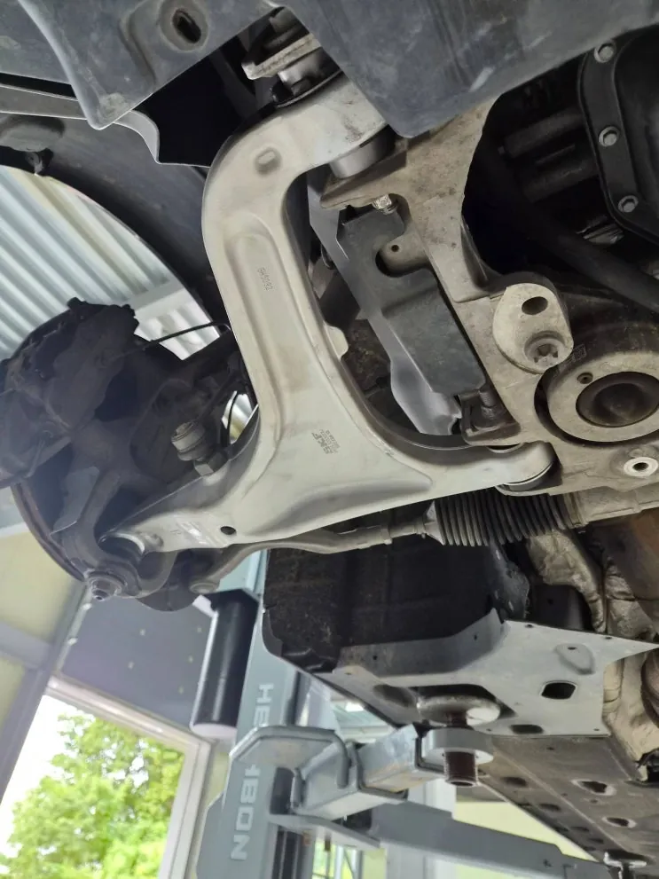
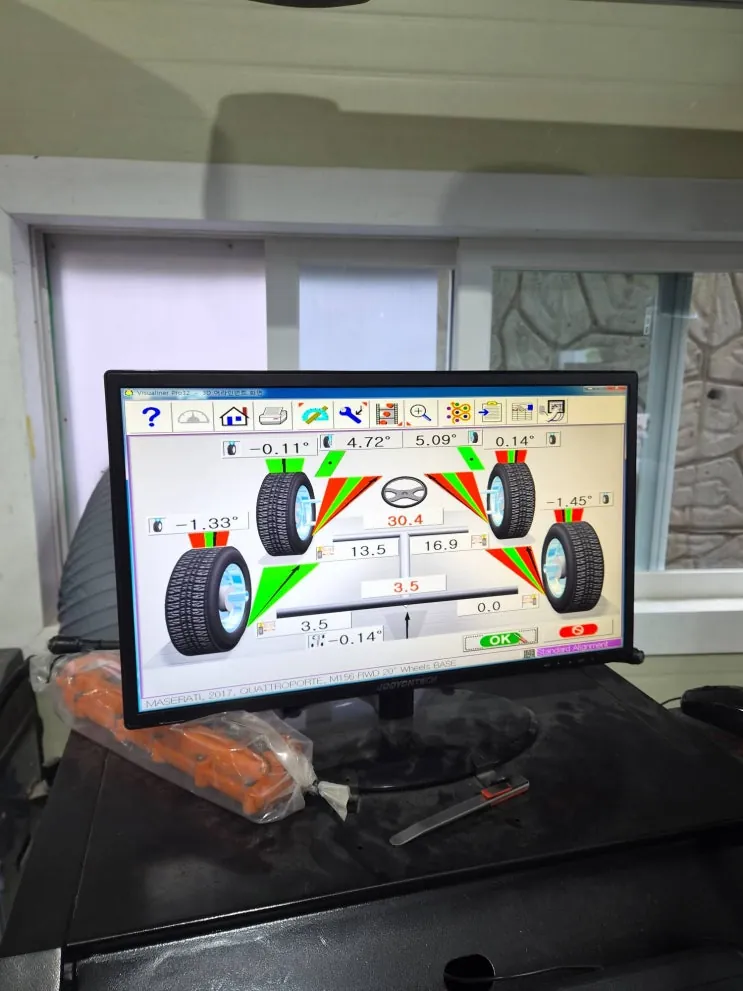
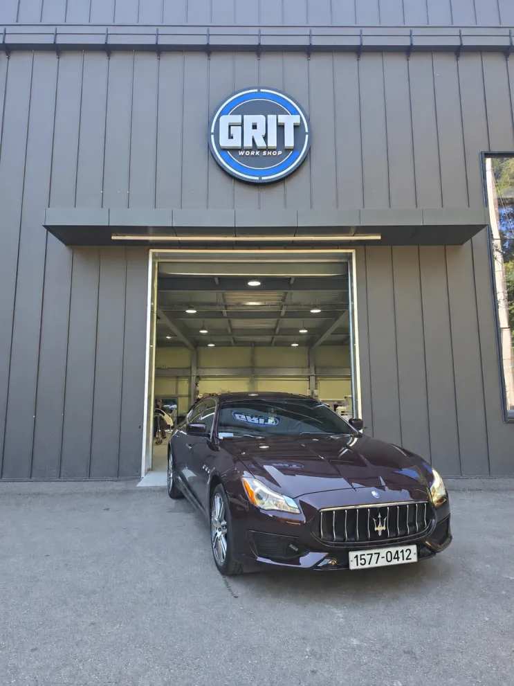

마세라티 콰트로포르테 좌우 로어암 교환
한눈에 보기
마세라티 콰트로포르테 하체를 리프트에서 점검해 로어암 상태를 확인했고, 좌우 로어암을 새 부품으로 교환해 규정 토크로 체결한 뒤 휠 얼라인먼트를 조정하고 시운전으로 상태를 확인했습니다.
- 차량
- 마세라티 콰트로포르테
- 증상
- 하체 점검 중 로어암 상태 확인
- 작업
- 하체 점검
- 좌우 로어암 탈거
- 신품 로어암 장착
- 규정 토크 체결
- 휠 얼라인먼트 조정
- 시운전
- 작업장
- 그릿서비스 · 경기도 파주시 교하로 1312-53, 1동 1층

입고와 하체 점검
마세라티 콰트로포르테를 리프트로 들어 올려 하체 전반을 점검하는 과정에서 로어암 상태를 확인했습니다.
로어암은 바퀴와 차체를 이어 주면서 노면에서 올라오는 충격을 받아 주는 부품입니다. 사람 몸으로 치면 무릎 관절과 비슷한 자리에 있습니다. 로어암이 차체에 붙는 부분에는 고무로 된 부싱이 들어가는데, 이 부싱이 닳으면 핸들 떨림이나 주행 중 소음 같은 증상이 나타나는 것이 일반적입니다.


교환 작업
좌우 로어암을 한쪽씩 차례로 떼어 내고 새 부품을 달았습니다. 떼어 낸 기존 부품과 새 부품을 나란히 놓으면 상태 차이가 눈으로도 구분됩니다. 장착 후에는 볼트를 규정 토크로 조여 마무리했습니다.


휠 얼라인먼트와 출고 점검
로어암처럼 바퀴 위치를 잡아 주는 부품을 바꾸면 바퀴가 노면에 닿는 각도가 조금 달라질 수 있습니다. 그래서 교환 후에는 장비로 휠 얼라인먼트를 다시 맞췄습니다. 이 과정까지 마친 뒤 시운전으로 최종 상태를 확인하고 출고했습니다.
로어암은 평소에 신경 쓸 일이 적은 부품이지만 주행 안정성과 직접 이어집니다. 정기 점검 때 하체를 함께 확인해 두는 것이 좋습니다.
마세라티·페라리의 엔진·미션·전장 같은 전문 정비는 같은 그룹의 마세라티·페라리 전문 정비소 로건서비스(loganservice.co.kr)에서도 상담할 수 있습니다.

자주 묻는 질문
로어암 부싱이 닳으면 어떤 증상이 있나요?
핸들 떨림과 주행 중 하체 소음이 대표적입니다. 정확한 상태는 리프트에서 하체를 점검해 확인합니다.
콰트로포르테, 비슷한 증상이라면 사진부터 보내 주세요
파주·운정·교하·금촌 어디서든 전화나 카톡으로 상태를 먼저 알려 주시면 확인 후 안내해 드립니다. 카톡에는 손상 부위가 보이게 찍은 사진을 함께 보내 주세요.
그릿서비스 · 경기도 파주시 교하로 1312-53, 1동 1층 · 네이버 지도
이 작업의 원문 기록: 네이버 블로그에서 보기